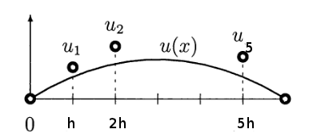
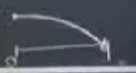
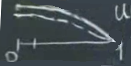
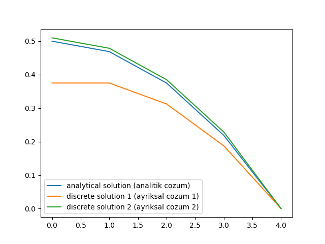

Ders 1.2
Bir diferansiyel denklemle başlayıp çözebileceğimiz bir ayrıksal (discrete) probleme nasıl ulaşırız? İkinci türevi içeren basit bir diferansiyel denkleme bakalım
$$ -\frac{d^2u}{dx^2} = f(x) $$
$$ u(0) = 0, \ u(1) = 0 $$
Eksi işareti var çünkü ikinci türevler negatif kesin (negative definite) şeylerdir ve eksi işareti bu durumu telafi etmek için, onu pozitif kesin hale çevirmek için konuldu. Ayrıca dikkat edersek sınır (boundary) şartları var, her iki uçta da fonksiyona sıfır değeri vermişiz, her iki uçta da onu "sabitlemişiz". Dikkat edelim, bu başlangıç değer probleminden farklı, $u$, $x$'in bir fonksiyonu, $t$ yani zamanın değil. Diyelim ki bu problem iki tarafı sabitlenmiş bir elastik çubuğu temsil ediyor, $f(x)$ çubuk üzerindeki her $x$ noktasındaki yükü gösteriyor. Bu derste $f(x) = 1$ alacağız, yani
$$ -\frac{d^2u}{dx^2} = 1 $$
Amacımız bir diferansiyel denklem alıp, onu ayrıksal olarak temsil edebilmek, yani şöyle
$$ \frac{-u_{i+1}+2u_i - u_{i-1}}{(\Delta x)^2} = f(x_i)$$
Bu denklem ikinci farklılıkları (second difference) gösteriyor.
Diferansiyelden (differential) farklılıklara (differences) geçişin birkaç yöntemi olabilir.
Birinci Farklılıklar (İleri Doğru)
$$ \Delta_Fu = \frac{u(x+h)-u(x)}{h} $$
Ayrıksal: $(u_{i+1} - u_{i}) / h$
Birinci Farklılıklar (Geriye Doğru)
$$ \Delta_Bu = \frac{u(x)-u(x-h)}{h} $$
Ayrıksal: $(u_{i-1} - u_{i}) / h$
Birinci Farklılıklar (Ortalanmış)
$$ \Delta_Cu = \frac{u(x+h)-u(x-h)}{2h} $$
Ayrıksal: $(u_{i+1} - u_{i-1}) / h$
Bunlar Calculus'tan hatırlanabilecek şeyler, fakat burada $h$ limitte sıfıra doğru gitmiyor. Hesapsal dünyada $h$ bizim belirlediğimiz bir mesafe, belki $1$, belki $0.1$. O kadar bir hesapsal adım atmayı biz seçiyoruz, her şey ayrıksal.
Ayrıca Calculus'ta hep $\Delta_F u$ gösterilir ve yaklaşıksal olarak türeve eşittir yani $u'(x)$. Geriye adım da vardır, hesapsal olarak ileri adım kadar iyidir, ve o da aşağı yukarı türeve eşittir. Çok önemli bir farklılık hesabı ise ortalanmış (centered) olandır, bu hesap ileri ve geri farklılıkların ortalamasıdır, aynı şekilde aşağı yukarı türeve eşittir.
Baştaki denklemimize birinci türevi dahil etmedik, çünkü birinci türevler anti-simetriktir.
Birinci farklılıklar yöntemine dönelim, türeve ne kadar yakındırlar?
Birinci Farklılıklar (İleri Doğru)
$$ \Delta_Fu \approx u'(x) + O(h) $$
Birinci Farklılıklar (Geriye Doğru)
$$ \Delta_Bu \approx u'(x) + O(h)$$
Birinci Farklılıklar (Ortalanmış)
$$ \Delta_Cu \approx u'(x) + O(h^2)$$
$O(h)$ $h$'ye oranlı (order of $h$) anlamına gelir, gerçek değerden "kesilip atılmış fark" olduğunu farz edelim. Ortalama için niye $O(h^2)$? Hesabı yapalım. Taylor serilerinin ne olduğunu hatırlayalım ve $u(x+h)$ açılımıni yapalım. Dikkat, ayrıksal formla değil, sürekli fonksiyonla çalışıyoruz, sürekli fonksiyon üzerinde "ayrıksal bir adım" atılınca ne olacağını bulmaya çalışıyoruz, bu şekilde sürekli formatta, cebirsel bir kural elde etmeye uğraşıyoruz.
$$ u(x+h) = u(x)+hu'(x)+\frac{h^2}{2}u"(x) + \frac{h^3}{6}u"'(x) ...$$
Taylor açılımlarında ve hesapsal bilimde ikinci seviye kesinlik (accuracy) çoğunlukla yeterli oluyor. Hesapsal kodları geliştirirken, test ederken tipik olarak birinci seviyede başlanır, ve nihai ürün, sonuç ortamı (production) için 2. seviye eklenir. Devam edelim, geriye doğru:
$$ u(x-h) = u(x)-hu'(x)+\frac{h^2}{2}u"(x) - \frac{h^3}{6}u"'(x) + ...$$
Ortalanmış farklılık için iki formülü birbirinden çıkartırız, ve $2h$'ye böleriz.
$$ u(x+h)-u(x-h) = 2hu'(x) + \frac{h^3}{3}u"'$$
İki tarafı $2h$'ye bölelim
$$ \frac{u(x+h)-u(x-h)}{2h} = u'(x) + \frac{h^2}{6}u"'$$
Görüyoruz ki ortalama farklılık doğru türevi $u'$ eşitliğin sağında veriyor, ve $h^2$ terimine bakarak yaklaşıklığın, hatanın ikinci seviyede olduğunu anlıyoruz.
Türevlerin yerine farklılık geçirirken seçenekler bunlar. Elimizde 3 seçenek var, ve çoğunlukla ortalanmış olan en iyisidir.
Şimdi ikinci farklılıklara gelelim: İkinci türev nedir? Türevin türevidir. İkinci farklılık nedir? Farkların farkıdır.
Nasıl hesaplanır? $\Delta_F \Delta_B$ yapabiliriz. Ya da $\Delta_B \Delta_F$. Birisi cikip $\Delta_C \Delta_C$ diyebilir. Hangisi? Hoca $\Delta_C \Delta_C$'yi sevmiyor çünkü elimize [1 0 -2 0 1] gibi bir farklılık vektörü geçiyor, fazla "dağılıyoruz". $\Delta_F \Delta_B$, ve $\Delta_B \Delta_F$ daha iyi çünkü ikisi de [1 -2 1] kullanır. Onlar daha 'odaklı".
İkincil farklılıklar (second differences) formülünü de türetelim. Bu formül ileri doğru bir adım attıktan sonraki fark ile geri doğru adım attıktan sonraki farkın farkı. Yani
$$ \frac{1}{h} \bigg[ \bigg(\frac{u_{i+1}-u_{i}}{h}\bigg) - \bigg(\frac{u_{i}-u_{i-1}}{h}\bigg) \bigg] $$
$$ = \frac{1}{h} \bigg[ \frac{u_{i+1} - 2u_{i}+u_{i-1}}{h} \bigg] $$
$$ = \frac{u_{i+1} - 2u_{i}+u_{i-1}}{h^2} $$
İkinci seviye diferansiyel denklem çözüme dönelim.
$$ -\frac{d^2u}{dx^2} = 1 $$
denkleminin genel çözümü ne olabilir? Özel (particular) çözüm ikinci türevi 1 olan ve negatifi alınan şey nedir sorusunun cevabından bulunabilir, iki kere entegre edilerek
$$ -\frac{1}{2}x^2 $$
buna ikinci türevi sıfır olan iki tane daha çözüm eklemek istiyorum, çünkü elimizde ikinci dereceden bir diferansiyel denklem var.
$$ u(x) = -\frac{1}{2}x^2 + Dx + C$$
Bu ek iki sabiti nasıl kullanacağım? Onları elimdeki iki tane sınır şartını tatmin etmek için kullanacağım. Bunu yapmak zor değil, birinci şartı formüle koyarım, sabitler için bir formül elde ederim, ikinci şartı koyarım, ikinci bir formül elde ederim, iki sabit, iki formül, böylece sonuç gelir.
$u(0)$ ise $C = 0$, $u(1)$ için $D=1/2$.
$$ u(x) = -\frac{1}{2}x^2 + \frac{1}{2} x$$
Şimdi ana diferansiyel denklem
$$ -\frac{d^2u}{dx^2} = 1 $$
ve onun ayrıksal formu
$$ \frac{-u_{i+1}+2u_i - u_{i-1}}{(\Delta x)^2} = f(x_i)$$
nasıl matris formatında göstereceğimize gelelim. $u_i$, $u_{i+1}$ gibi değerlerin birbirinden çıkartılması, vs gibi işlemler gerekiyor. Altta böyle bir işlemi matris üzerinden yapmanın yolunu görüyoruz.
$$ \left[\begin{array}{rrrr} \ddots &&& \\ -1 & 0 & 1 & \\ & -1 & 0 & 1 \\ &&& \ddots \end{array}\right] \left[\begin{array}{l} u_{i-1} \\ u_{i} \\ u_{i+1} \\ u_{i+2} \end{array}\right] = \left[\begin{array}{c} \vdots \\ u_{i+1}-u_{i-1} \\ u_{i+2}-u_i \\ \vdots \end{array}\right] $$
Soldaki matris $\left[\begin{array}{ccc} -1 & 0 & 1\end{array}\right]$ yerine ikinci farklılıklar için $\left[\begin{array}{ccc} -1 & 2 & 1\end{array}\right]$ de kullanabilir, o zaman ikinci farklılık hesabını yapmış oluruz. Yani şöyle
$$ \frac{1}{h^2} \left[\begin{array}{rrrrr} 2 & -1 & & & \\ -1 & 2 & -1 & & \\ & -1 & 2 & -1 & \\ & & -1 & 2 & -1 \\ & & & -1 & 2 \end{array}\right] \left[\begin{array}{r} u_1 \\ u_2 \\ u_3 \\ u_4 \\ u_5 \end{array}\right] = \left[\begin{array}{r} 1 \\ 1 \\ 1 \\ 1 \\ 1 \end{array}\right] $$
Bu $KU = F$ denkleminin matris formudur. Diferansiyel denklem çözmek demek $u$ fonksiyonunu bulmak demektir, o zaman yukarıdaki bilinmeyen $u_1,u_2,..$ değerlerinin hesaplamamız gerekiyor. Onlar "ayrıksal" $u$ fonksiyonunun her veri noktasındaki değerlerini temsil ediyor olacaklar.
Bu çözüm perde arkasında Python tarafından nasıl hesaplanacak? Yoketme (eliminasyon) tekniği ile.
$h^2$, ayrıksal formüldeki $\Delta x^2$, nedir? $u$'yu kaç parçaya ve hangi değerler arasında bolduğumüze bakalım: 0 ve 1 arasında ve 6 parçaya bölüyoruz, o zaman $h=1/6$, $h^2=1/36$, yani $1/h^2 = 36$, yani üstteki imajda $h^2$'yi en solda çarpan 36 olarak yazabiliriz. Sonra $u$'yu hesaplatırız.

$K$ matrisinin 5x5 olması karışıklık yaratmış olabilir. Burada sebep K matrisine $u_0$ ve $u_6$'nin dahil edilmemiş olması, çünkü o değerleri zaten biliyoruz. Bu değerler olsaydı $K$ matrisinin sol ve sağına tamamen sıfır içeren iki kolon gerekecekti, $u$ vektörüne alttan ve üstten $u_0$ ve $u_6$ eklenecekti ve bu iki değer sıfır olduğu için $K$'nin sol ve sağındaki sıfırlar ile çarpılacaklardı, bu yüzden mevcut toplam üzerinde hiç etkileri olmayacaktı . Bu sebeple bu iki kolonu ve $u$ değerini tamamen kaldırmak sonuç üzerine hiçbir etki yapmıyor.
Devam edelim. Şimdi orijinal problemi değiştirelim. Eğer üstteki problem iki ucu sabitlenmiş kendi ağırlığıyla asılan bir elastik çubuğu gösteriyorsa (ve $u$ değerleri çubuğun ne kadar uzadığını temsil ediyorsa), bu sefer üstteki ucu serbest bırakabiliriz. Yani $u(0)=0$ olmayacak.
Yine birörnek (uniform) çubuk, eşit dağılmış yük.
$$ -\frac{d^2u}{dx^2} = 1 $$
$$ \frac{du}{dx}(0) = 0, \ u(1) = 0 $$
Burada ilk şart $u$'nin eğiminin (slope) sıfıra eşitlenmiş olması.
Önceki denklemdeki genel çözüm hala ise yarar.
$$ u(x) = -\frac{1}{2}x^2 + Cx + D$$
$$ \frac{du}{dx} = -x + C $$
$$ \frac{du}{dx}(0) = 0 + C = 0 $$
$$ C = 0 $$
$$ u(1) = 0 = -1/2 + 0 + D $$
$$ D = 1/2 $$
O zaman çözüm
$$ u(x) = -\frac{1}{2}x^2 + 1/2$$
Grafikleyince şuna benzer

Eğimin sıfır noktasında sıfır olduğunu görüyoruz.
Şimdi farklılıklar formülüne gelelim. Diferansiyel denklemin karşılığı olan farklılık formülü nedir? Hala aynı:
$$ \frac{-u_{i+1}+2u_i - u_{i-1}}{h^2} = f(x_i)$$
Şimdi önemli noktaya geldik: başlangıç şartları ne olacak? $u(1)=0$ kolay, $ du/dx(0) = 0$ nasıl temsil edilecek? Bir fikir şu olabilir.
$$ \frac{u_1-u_0}{h} = 0 $$
Bu ifadeyi matrise nasıl tercüme ederiz? Üstteki ifade aynı zamanda $u_1 - u_0 = 0$ demektir, yer degistirince $u_1 = u_0$. $K$ matrisinin birinci satırı nedir?
$$ -u_0 + 2u_1 - u_2 $$
$u_0$ yerine $u_1$ koyalım
$$ = -u_1 + 2u_1 - u_2 $$
$$ = u_1 - u_2 $$
O zaman birinci satırı üstteki gibi değiştirirsek, sınır şartlarından birini yerine getirmiş oluruz, yani ilk satıra $\left[\begin{array}{cc} 1&-1\end{array}\right]$ koyacağız, orada $\left[\begin{array}{cc} 2&-1\end{array}\right]$ yerine $\left[\begin{array}{cc} 1&-1\end{array}\right]$ var artık. Matris bu şekilde değişince ona $K$ yerine $T$ matrisi deniyor. $TU = \left[\begin{array}{ccc} 1&1&\dots\end{array}\right]^T$.
$$ \frac{1}{h^2} \left[\begin{array}{rrrrr} 1 & -1 & & & \\ -1 & 2 & -1 & & \\ & -1 & 2 & -1 & \\ & & -1 & 2 & -1 \\ & & & -1 & 2 \end{array}\right] \left[\begin{array}{r} u_1 \\ u_2 \\ u_3 \\ u_4 \\ u_5 \end{array}\right] = \left[\begin{array}{r} 1 \\ 1 \\ 1 \\ 1 \\ 1 \end{array}\right] $$
Soru: ayrıksal çözüm gerçek çözüme ne kadar yakın? Cevap hata payı $O(h)$ çünkü $(u_1 - u_0) / h$ tanımı birinci dereceden bir yaklaşıksallık (approximation). Kabaca çizince şöyle gözükür:

Hesap kalitesi pek iyi denemez. Çözümü ikinci dereceden yapsak daha iyi olacaktı. Nasıl? $(u_1 - u_0) / h$ yerine başka bir şey kullanmamız lazım. Ortalanmış farklılığı hatırlayalım, bu yöntem ikinci derece doğruluğu olan bir yöntemdir,
Problem 1.2 A
Kitaptaki ufak problemi hatırlayalım
$$ \left[\begin{array}{rrr} 1 & -1 & \\ -1 & 2 & -1 \\ & -1 & 2 \end{array}\right] \left[\begin{array}{r} u_1 \\ u_2 \\ u_3 \end{array}\right] = \left[\begin{array}{r} 1 \\ 1 \\ 1 \end{array}\right] $$
Bu problem işte $O(h)$ hatasını azaltma konusunu işliyor, bunun için ortalama farklılık (centered difference) kullanılacak, $(u_1 - u_o)/h$ yerine 0'inci değere denk gelecek şekilde farklılığı ortalayacağız, 0 üzerinde ortalama yapmamız için onun bir gerisine ve bir ilerisine gitmek lazım, o zaman önce $K$ matrisini bir genişletelim, çünkü artık $u_0$'in dahil edilmesi gerekecek ve hayali bir $u_{-1}$'i düşünelim, $u'(0) = 0$ için
$$ \frac{u_1-u_{-1}}{2h} = 0$$
tanımını kullanalım. O zaman
$$ u_1 - u_{-1} = 0$$
$$ u_1 = u_{-1} $$
$$ -u_{-1} + 2u_0 - u_1 = h^2 f(0) $$
$u_1 = u_{-1}$ ifadesini yerine koyalım
$$ -u_1 + 2u_0 - u_1 = h^2 f(0) $$
$$ -2u_1 + 2u_0 = h^2 f(0) $$
$$ -u_1 + u_0 = \frac{1}{2} h^2 f(0) $$
O zaman matrisin üst sol değeri $u_0$ katsayısına göre 1, onun sağındaki değer $u_1$ katsayısına göre -1 olmalı. $1/2$ değerini de eşitliğin sağındaki $f$ için kullandığımıza dikkat. Tüm bunları $u_{-1}$'in yerine değer geçirerek elde ettiğimiz için o kolona artık ihtiyaç kalmadı, o geçici kolon, matristen atıldı.
$$ \frac{1}{h^2} \left[\begin{array}{rrrr} 1 & -1 & & \\ -1 & 2 & -1 & \\ & -1 & 2 & -1 \\ & & -1 & 2 \end{array}\right] \left[\begin{array}{r} u_0 \\ u_1 \\ u_2 \\ u_3 \end{array}\right] = \left[\begin{array}{r} 1/2 \\ 1 \\ 1 \\ 1 \end{array}\right] $$
Matris boyutlarının nasıl büyüdüğüne, ve $u_0$'in dahil edilmesine dikkat edelim. Problemin başındaki matris 3x3 boyutundaydı, bu 4x4 boyutunda, ayrıca $h$ hala $1/4$ değerinde.
Problem 1-2-A
import scipy.linalg as lin
def ktbc(n):
vec = np.zeros((1,n))
vec[0,0] = 2
vec[0,1] = -1
K = lin.toeplitz(vec)
T = np.copy(K)
T[0,0] = 1
B = np.copy(K)
B[0,0] = 1
B[n-1,n-1] = 1
C = np.copy(K)
C[n-1,n-1] = 1
return K, T, B, C
K,T,B,C = ktbc(3); print T
h = 1./4.
discrete = lin.solve( (1./h)**2 * T, [1.,1.,1.] )
discrete = np.insert(discrete, 0, discrete[0])
discrete = np.append(discrete, 0.)
K,T,B,C = ktbc(4); print T
discrete_2 = lin.solve( (1./h**2)*T, [1./2.,1.,1.,1.] )
# add little diff for plotting
# grafik ust uste binmesin diye azicik fark ekledik
discrete_2 = discrete_2 + 0.01
discrete_2 = np.append(discrete_2, 0.)
def u(x): return (1./2.)*(1. - x**2)
p1 = plt.plot([u(0.0), u(0.25), u(0.5), u(0.75), u(1.)])
p2 = plt.plot(discrete)
p3 = plt.plot(discrete_2)
plt.legend([p1,p2,p3], ["analytical solution (analitik cozum)",
"discrete solution 1 (ayriksal cozum 1)",
"discrete solution 2 (ayriksal cozum 2)"
])
plt.savefig('1-2-A.png')
[[ 1. -1. 0.]
[-1. 2. -1.]
[ 0. -1. 2.]]
[[ 1. -1. 0. 0.]
[-1. 2. -1. 0.]
[ 0. -1. 2. -1.]
[ 0. 0. -1. 2.]]

Güzel. Artık hesap gerçek sonuca iyice yaklaşacak.
[Derse dönelim] Bunlardan bahsetmemizin önemli bir sebebi sınır şartlarının ne kadar önemli olduğunu anlatmak. Görüldüğü gibi sınır şartları, onların yaklaşıksallanma yöntemleri sonucun üzerinde direk bir etki yaratıyor.
Bir dipnot olarak bahsedelim, burada kullandığımız metot sınırlı farklılıklar (finite differences) metodu. Eğer sınırlı elementler (finite elements) metodu kullanıyor olsaydık, üstteki satırın değişmesi otomatik olarak gerçekleşecekti. Sınırlı elementler metotu ileriki derslerin birinde işlenecek.
Soru 1.2.7
$u$'dan alınacak dört veri noktasıyla (sample) $du/dx$ ortada olmak üzere 4. seviye kesinlik elde edilebilir.
$$ \frac{-u_2 + 8u_1 - 8u_{-1} + u_{-2}}{12h} = \frac{du}{dx} + bh^4 \frac{d^5}{dx^5} + .. $$
1) Bunun $u=1$, $u=x^2$ ve $u=x^4$ için doğru olduğunu kontrol edin.
2) $u_2,u_1,u_{-1},u_{-2}$'yi genişletin. Elde edilen dört Taylor serisini birleştirerek $h^4$ için gelecek $b$ katsayısını hesaplayın.
Cevap
Eşitliğin sol tarafındaki 1, 8 gibi katsayılar modelleyici tarafından seçilmiş, bir teorinin, ispatın sonucu değil. Hala birincil farklılık (first differences) dünyasındayız, ama ileri, geriye gidip katsayı 1 kullanmak yerine dört noktayı kullanmak istemiş, ve ortadaki noktalara daha fazla "ağırlık" vermek istemişiz. Tabii bu katsayılarla bu noktalar kullanılınca, ortalamanın düzelmesi için katsayıların bölüme yansıması gerekiyor, o yüzden bölümde $12h$ görüyoruz.
Ve aynen ileri, geriye doğru ayrıksal formu sürekli fonksiyonlar üzerinde Taylor serisiyle temsil edebildiğimiz gibi, üstteki eşitliğin sol tarafını da Taylor serisi ile $u(x+h)$ türü terimler üzerinden temsil edebiliriz. Üstte $u_{2}$, $u_{-1}$ gibi ibareler var, bunların Taylor karşılığı $u(x+2h)$, $u(x-h)$ gibi ifadeler olur. Katsayı çarpımlarının ve $12h$'ye bölüm işleminin Taylor serisi üzerinde de aynen kullanılması gerekiyor tabii ki.
Bu arada $b$ sabitinin ne olduğunu soru söylemiyor, ama tüm bu cebirsel işlemi gerçekleştirince denklemdeki eşitliğin sağ tarafı aynen elde edilecek ve böylece $b$ yerine hangi sayı geleceği de ortaya çıkacak.
$$ \frac{-u_2 + 8u_{-1} + u_{-2}}{12h} = \frac{du}{dx} + bh^4 \frac{d^5u}{dx^5}+..$$
$u(x) = 1$ için
$$ \frac{du}{dx} = \frac{-1 + 8 -8 + 1}{12h} = 0$$
$u(x)=x^2$ için
$$ \frac{du}{dx} = \frac{0(x+2h)^2 + 8(x+h)^2 - 8(x-h)^2 + (x-2h)^2}{12h}$$
$$ \frac{(x-2h)^2 - (x+2h)^2 + 8{ (x_h)^2 - (x-h)^2}}{12h} $$
$$ \frac{ (x-\cancel{2h} + x + \cancel{2h}) (\cancel{x}-2h-\cancel{x}-2h) + 8(x + \cancel{h} + x - \cancel{h}) (\cancel{x} + h - x + \cancel{h})} {12h} $$
$$ \frac{-4h(2x) + 8(2x)(2h)}{12h} $$
$$ 2x $$
$u(x) = x^4$ için
$$ \frac{du}{dx} = \frac{(x-2h)^4 - (x+2h)^4 + 8{ (x+h)^4 - (x-h)^4}}{12h} $$
$$ = \bigg\{ [ (x-2h)^2 + (x+2h)^2 ] [ (x-2h)^2 - (x+2h)^2] + 8{ [ (x+h)^2 + (x-h)^2 \ [(x+h)^2 - (x-h)] } \bigg\} / 12h $$
$$ = \frac{1}{12h} \bigg\{ -8hx [(x-2h)^2 + (x+2h)^2] + 8(4hx)[(x+h)^2 + (x-h)^2] \bigg\} $$
$$ = \frac{1}{12h} \bigg\{ -8hx[x^2 - \cancel{4hx} + 4h^2 + x^2 + \cancel{4xh} + 4h^2 ] + 8(4hx)[x^2 + \cancel{2xh} + h^2 + x^2 - \cancel{2xh} + h^2] \bigg\} $$
$$ = \frac{1}{12h} \bigg\{\ -8hx [2x^2 + 8h^2] + 8(4xh)[2x^2+ 2h^2] \bigg\} $$
$$ = \frac{8hx}{12h} \bigg\{ 2x^2 + \cancel{8h^2} - 8x^2 - \cancel{8h^2} \bigg\}$$
$$ = 4x^3 $$
$$ u(x+h) = u(x) + hu'(x) + \frac{1}{2}h^2u"(x) + \frac{1}{6}h^3u"'(x)+ \frac{1}{24}h^4u""(x) + \frac{1}{120}h^5u^{(5)} (x) + ... $$
$$ u(x-h) = u(x) - hu'(x) + \frac{1}{2}h^2u"(x) - \frac{1}{6}h^3 u"'(x) + \frac{1}{24}h^4u""(x) - \frac{1}{120}h^5u^{(5)}(x) + ... $$
$$ u(x+2h) = u(x) + 2hu'(x) + \frac{1}{2}(2h)^2u"(x) + \frac{1}{6}(2h)^3u"'(x)+ \frac{1}{24}(2h)^4 u^{(4)} (x) + \frac{1}{120} (2h)^5 u^{(5)} (x) + ... $$
$$ u(x-2h) = u(x) - 2hu'(x) + \frac{1}{2}(2h)^2u"(x) -\frac{1}{6}(2h)^3u"'(x)+ \frac{1}{24}(2h)^4 u^{(4)} (x) - \frac{1}{120} (2h)^5 u^{(5)} (x) + ... $$
$$ \frac{-u_2 + 8u_1 - 8_{u-1} + u_{-2}}{12h} $$